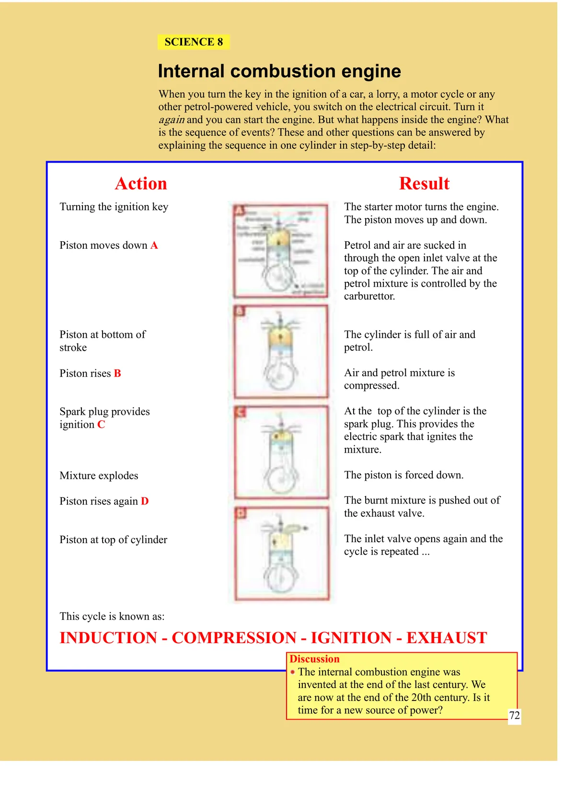

SCIENCE 8 Internal combustion engine When you turn the key in the ignition of a car, a lorry, a motor cycle or any other petrol-powered vehicle, you switch on the electrical circuit. Turn it again and you can start the engine. But what happens inside the engine? What is the sequence of events? These and other questions can be answered by explaining the sequence in one cylinder in step-by-step detail: Action → Result 1) Turning the ignition key → The starter motor turns the engine. The piston moves up and down. 2) Piston moves down [A] → Petrol and air are sucked in through the open inlet valve at the top of the cylinder. The air and petrol mixture is controlled by the carburettor. 3) Piston at bottom of stroke → The cylinder is full of air and petrol. 4) Piston rises [B] → Air and petrol mixture is compressed. 5) Spark plug provides ignition [C] → At the top of the cylinder is the spark plug. This provides the electric spark that ignites the mixture. 6) Mixture explodes → The piston is forced down. 7) Piston rises again [D] → The burnt mixture is pushed out of the exhaust valve. 8) Piston at top of cylinder → The inlet valve opens again and the cycle is repeated ... This cycle is known as: INDUCTION - COMPRESSION - IGNITION - EXHAUST Discussion: • The internal combustion engine was invented at the end of the last century. We are now at the end of the 20th century. Is it time for a new source of power?
Find a word to go with each noun حرفياً مع أن العمود الأيسر يبدأ بأفعال (turn, suck, push...) والعمود الأيمن يمزج الأسماء بظروف مثل in وout.[
{
"num": 1,
"question": "1 How many times does the piston go up and down in one cycle?",
"model_answer": "Twice (2 times up and down: down for Induction, up for Compression, down for Ignition, up for Exhaust).",
"explain_ar": "يهبط مرتين ويصعد مرتين في الدورة الواحدة ذات الأشواط الأربعة."
},
{
"num": 2,
"question": "2 The cycle shown in the table is for a four-stroke engine. What are the names of the four strokes?",
"model_answer": "Induction, Compression, Ignition, and Exhaust.",
"explain_ar": "السحب، الانضغاط، الاشتعال، والعادم."
},
{
"num": 3,
"question": "3 One of these strokes is also called the power stroke. Can you work out which one? Explain your answer.",
"model_answer": "Ignition — because the electric spark ignites the compressed mixture, causing an explosion that forces the piston down with the power to drive the vehicle.",
"explain_ar": "شوط الاشتعال هو الوحيد الذي يولّد القوة الدافعة للمكبس."
},
{
"num": 4,
"question": "4 Where do these elements of the engine come from? a) the spark b) the petrol and air mixture",
"model_answer": "a) From the spark plug (supplied via the electrical circuit / distributor). b) From the carburettor, sucked in through the open inlet valve.",
"explain_ar": "الشرارة من البوجي (شمعة الإشعال)، والخليط من المكربن."
},
{
"num": 5,
"question": "5 Where do these elements go to? a) the burnt mixture b) the power",
"model_answer": "a) Out of the cylinder through the exhaust valve. b) To the crankshaft, gearbox and wheels to make the vehicle move.",
"explain_ar": "الغازات المحترقة تخرج من صمام العادم، والطاقة تنتقل إلى العجلات."
},
{
"num": 6,
"question": "6 Why is petrol and air sucked into the cylinder when the piston moves down?",
"model_answer": "As the piston moves down, it increases the space (lowers the pressure) inside the cylinder, creating suction that draws air and petrol through the open inlet valve.",
"explain_ar": "هبوط المكبس يوسّع الحجم داخل الأسطوانة فيسحب الخليط من الخارج."
},
{
"num": 7,
"question": "7 Why is the burnt mixture pushed out of the exhaust valve when the piston moves up?",
"model_answer": "As the piston rises, it reduces the space in the cylinder and pushes the waste burnt gases out through the open exhaust valve.",
"explain_ar": "صعود المكبس يضيق الحيّز فيدفع الغازات المحترقة للخارج."
}
][]
[
{
"num": 1,
"prompt": "1 noun: ignition → verb: ______",
"answers": [
"ignite"
]
},
{
"num": 2,
"prompt": "2 noun: ______ ← verb: mix",
"answers": [
"mixture"
]
},
{
"num": 3,
"prompt": "3 noun: ______ ← verb: compress",
"answers": [
"compression"
]
},
{
"num": 4,
"prompt": "4 noun: explosion → verb: ______",
"answers": [
"explode"
]
}
][
{
"label_ar": "الشوط الأول A: Induction (السحب)",
"placeholder": "In diagram A, the inlet valve opens, the piston moves down, and petrol and air mixture from the carburettor is sucked into the cylinder."
},
{
"label_ar": "الشوط الثاني B: Compression (الانضغاط)",
"placeholder": "In diagram B, both valves are closed, the piston rises to the top, and the petrol and air mixture is compressed."
},
{
"label_ar": "الشوط الثالث C و الرابع D: Ignition & Exhaust (الاشتعال والعادم)",
"placeholder": "In diagram C, the spark plug produces an electric spark that ignites the mixture; it explodes and forces the piston down. In diagram D, the piston rises again and pushes the burnt mixture out of the exhaust valve before the cycle repeats."
}
]{
"pb_text_vs_image": "طُوبقت PB ص 72 مع pb-74.png: نص التمهيد، جدول Action/Result الثماني، سلسلة INDUCTION - COMPRESSION - IGNITION - EXHAUST، مربع Discussion، وصور الأسطوانة A–D.",
"wb_ocr_vs_image": "طُوبقت WB ص 105–107 مع wb_tail-106.png وwb_tail-107.png وwb_tail-108.png: أسئلة 8 A (1–7)، ومطابقة 8 B (مع حفظ خطأ الطباعة noun)، وجدول 8 C، وتدريب 8 D."
}